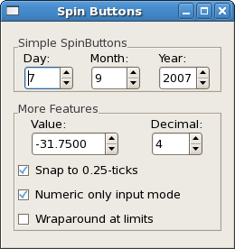

|
Gtk2Hs Tutorial |
||
|---|---|---|
|
Next |
||
The SpinButton widget is generally used to allow the user to select a value from a range of numeric values. It consists of a text entry box with up and down arrow buttons attached to the side. Selecting one of the buttons causes the value to "spin" up and down the range of possible values. The entry box may also be edited directly to enter a specific value. SpinButton is an instance of EditableClass, so the attributes and functions defined there are also available.
The spin button allows the value to have zero or a number of decimal places and to be incremented/decremented in configurable steps. The action of holding down one of the buttons optionally results in an acceleration of change in the value according to how long it is depressed.
SpinButton uses an Adjustment object to hold information about the range of values that the spin button can take. Recall that an Adjustment widget is created with the following function:
adjustmentNew
:: Double -- value
-> Double -- lower
-> Double -- upper
-> Double -- stepIncrement
-> Double -- pageIncrement
-> Double -- pageSize
-> IO Adjustment
|
These attributes of an Adjustment are used by the SpinButton in the following way:
Additionally, mouse button 3 can be used to jump directly to the upper or lower values when used to select one of the buttons. Note that this may depend on the way your mouse is configured on your computer system.
Lets look at how to create a spin button:
spinButtonNew :: Adjustment -> Double -> Int -> IO SpinButton |
The second argument (climbRate) take a value between 0.0 and 1.0 and indicates how fast the spin button changes when an arrow is clicked on. The third argument specifies the number of decimal places to which the value will be displayed.
There also is a convenience constructor that allows creation of a spin button without manually creating an adjustment.
spinButtonNewWithRange :: Double -> Double -> Double -> IO SpinButton |
The three arguments, all of type Double, specify the minum allowable value, the maximum allowable value, and the increment added or subtracted by spinning the widget.
A Spin Button can be reconfigured after creation using the following function:
spinButtonConfigure :: SpinButtonClass self => self -. Adjustment -> Double -> Int |
The first argument specifies the SpinButton widget that is to be reconfigured. The other arguments are the climbRate and the number of decimal places (digits) to disply.
The SpinButton attributes, which can be retrieved and changed with the generic get and set functions are:
spinButtonAdjustment :: SpinButtonClass self => Attr self Adjustment spinButtonClimbRate :: SpinButtonClass self => Attr self Double spinButtonDigits :: SpinButtonClass self => Attr self Int spinButtonSnapToTicks :: SpinButtonClass self => Attr self Bool spinButtonNumeric :: SpinButtonClass self => Attr self Bool spinButtonWrap :: SpinButtonClass self => Attr self Bool spinButtonValue :: SpinButtonClass self => Attr self Double |
The first three are as discussed before. The attribute spinButtonSnapToTicks determines whether erroneous values are automatically changed to the spin button's nearest increment (default is False). Attribute spinButtonNumeric determines whether non-numeric characters should be ignored (default False), and spinButtonWrap is used to set whether a spin button should wraparound upon reaching its limits (default False).
Attribute spinButtonValue is used to read the current value or set a new value (default is 0).
To change the value of a spin button you can also use:
spinButtonSpin :: SpinButtonClass self => self -> SpinType -> Double -> IO () |
where SpinType determines the kind of change and Double (increment) determines the value.
SpinType has the following constructors:
SpinStepForward SpinStepBackward SpinPageForward SpinPageBackward SpinHome SpinEnd SpinUserDefined |
Many of these settings use values from the Adjustment object that is associated with a spin button. SpinStepForward and SpinStepBackwardchange the value of the spin button by the amount specified by the increment, unless it is equal to 0, in which case the value is changed by the value of the stepIncrement in the adjustment. SpinPageForward and SpinPageBackward simply alter the value of the Spin Button by the increment. SpinPageHome and SpinPageEnd set the value to the bottom repectively the top of the Adjustment range. i>SpinUserDefined simply alters the value of the spin button by the specified amount.
A spin button has an update policy:
spinButtonUpdatePolicy :: SpinButtonClass self => Attr self SpinButtonUpdatePolicy |
The constructors of SpinButtonUpdatePolicy are either UdateAlways or UpdateIfValid. These policies affect the behavior of a Spin Button when parsing inserted text and synchronizing its value with the values of the Adjustment. In the case of UpdateIfValid the spin button only value gets changed if the text input is a numeric value within the range specified by the Adjustment. Otherwise the text is reset to the current value. In case of UpdateAlways we ignore errors while converting text into a numeric value.
Finally, you can explicitly request that a Spin Button update itself:
spinButtonUpdate :: SpinButtonClass self => self -> IO () |
It's example time again; this is a screenshot after playing around with some of the settings.

The spin buttons have all been created with the following function which uses spinButtonNewWithRange. Because the stepIncrement will be 1.0 in all cases, this is not a parameter in myAddSpinButton.
myAddSpinButton :: HBox -> String -> Double -> Double -> IO SpinButton
myAddSpinButton box name min max = do
vbox <- vBoxNew False 0
boxPackStart box vbox PackRepel 0
label <- labelNew (Just name)
miscSetAlignment label 0.0 0.5
boxPackStart vbox label PackNatural 0
spinb <- spinButtonNewWithRange min max 1.0
boxPackStart vbox spinb PackNatural 0
return spinb
|
In the main function we use one of the spin buttons which already exist, but give it a new adjustment with spinButtonConfigure. The old limits of -1000.0 and 1000.0 are now replaced with -100.0 and 100.0. Note the brackets around the negative numbers. The initial value is set at 0.0 and the step increment is 0.25. The page increment, which is what you get when pressing mouse button 2 on the arrow in the spin button, is set at 10.0. The page size, which is not used, is 0.0 here. Pressing mouse button 3 on an arrow jumps to the appropriate limit of -100.0 or 100.0.
The new signal here is onValueSpinned ,which is emitted whenever the user changes the value of a spin button. Here it is used to control the number of decimal digits which are to be displayed in the spinLarge spin button. Note the rounding of the value, which is needed to convert the Double to an Integral type.
In this example we've used the generic get and
set functions on attributes rather than the corresponding
functions, which are also available. This is actually the
recommended style when programming Gtk2Hs, and in the future many
specific functions will be deprecated.
import Graphics.UI.Gtk
main:: IO ()
main = do
initGUI
window <- windowNew
mainbox <- vBoxNew False 0
set window [windowTitle := "Spin Buttons", containerBorderWidth := 10,
windowDefaultWidth := 250,
windowDefaultHeight := 200,
containerChild := mainbox ]
hbox1 <- hBoxNew False 0
frame1 <- frameNew
set frame1 [frameLabel := "Simple SpinButtons", containerChild := hbox1,
frameLabelYAlign := 0.8, frameShadowType := ShadowOut]
boxPackStart mainbox frame1 PackNatural 5
spinD <- myAddSpinButton hbox1 "Day:" 1.0 31.0
spinM <- myAddSpinButton hbox1 "Month:" 1.0 12.0
spinY <- myAddSpinButton hbox1 "Year:" 2000.0 2100.0
set spinY [spinButtonValue := 2007]
vbox1 <- vBoxNew False 5
frame2 <- frameNew
set frame2 [frameLabel := "More Features", containerChild := vbox1,
frameLabelYAlign := 0.8, frameShadowType:= ShadowOut ]
boxPackStart mainbox frame2 PackNatural 5
hbox2 <- hBoxNew False 0
boxPackStart vbox1 hbox2 PackNatural 0
spinLarge <- myAddSpinButton hbox2 "Value:" (-1000.0) 1000.0
adj <- adjustmentNew 0.0 (-100.0) 100.0 0.25 10.0 0.0
spinButtonConfigure spinLarge adj 0.0 2
spnctl <- myAddSpinButton hbox2 "Decimal:" 0.0 10.0
set spnctl [spinButtonValue := 2.0]
tsnap <- checkButtonNewWithLabel "Snap to 0.25-ticks"
boxPackStart vbox1 tsnap PackNatural 0
tnumr <- checkButtonNewWithLabel "Numeric only input mode"
boxPackStart vbox1 tnumr PackNatural 0
twrap <- checkButtonNewWithLabel "Wraparound at limits"
boxPackStart vbox1 twrap PackNatural 0
widgetShowAll window
onValueSpinned spnctl $ do newdig <- get spnctl spinButtonValue
set spinLarge [spinButtonDigits := (round newdig)]
onToggled tsnap $ do st <- get tsnap toggleButtonActive
set spinLarge [spinButtonSnapToTicks := st]
onToggled tnumr $ do st <- get tnumr toggleButtonActive
set spinLarge [spinButtonNumeric := st]
onToggled twrap $ do st <- get twrap toggleButtonActive
set spinLarge [spinButtonWrap := st]
onDestroy window mainQuit
mainGUI
|
|
Text Entries and Status Bars |
|
To be continued |